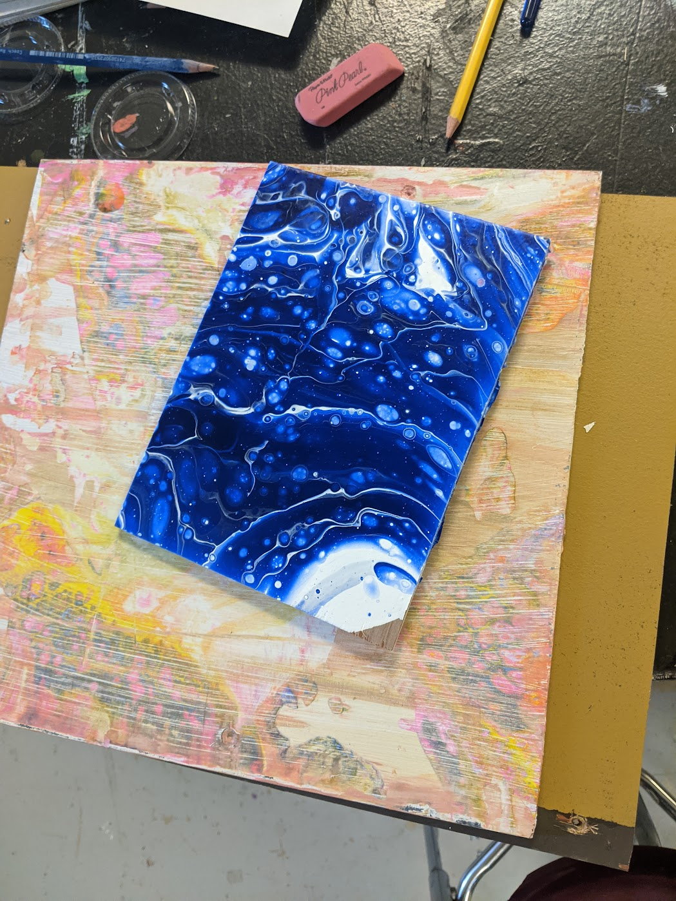
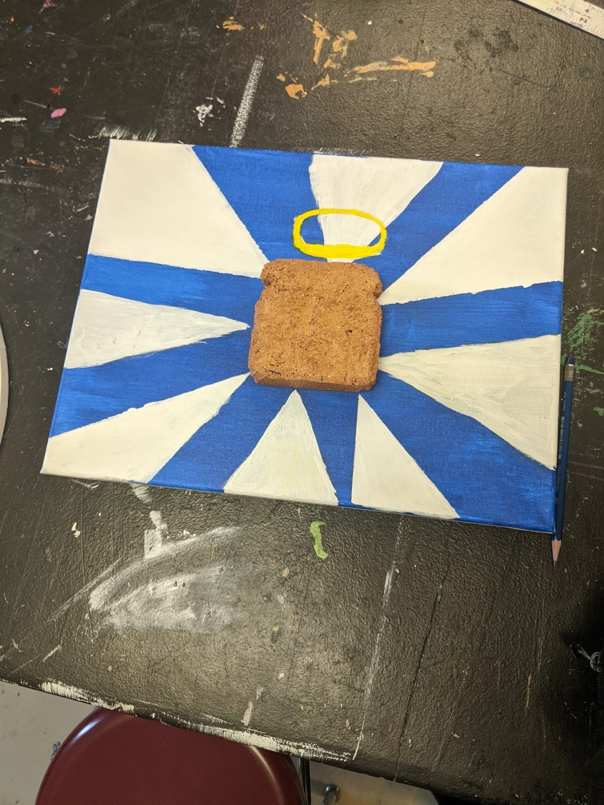
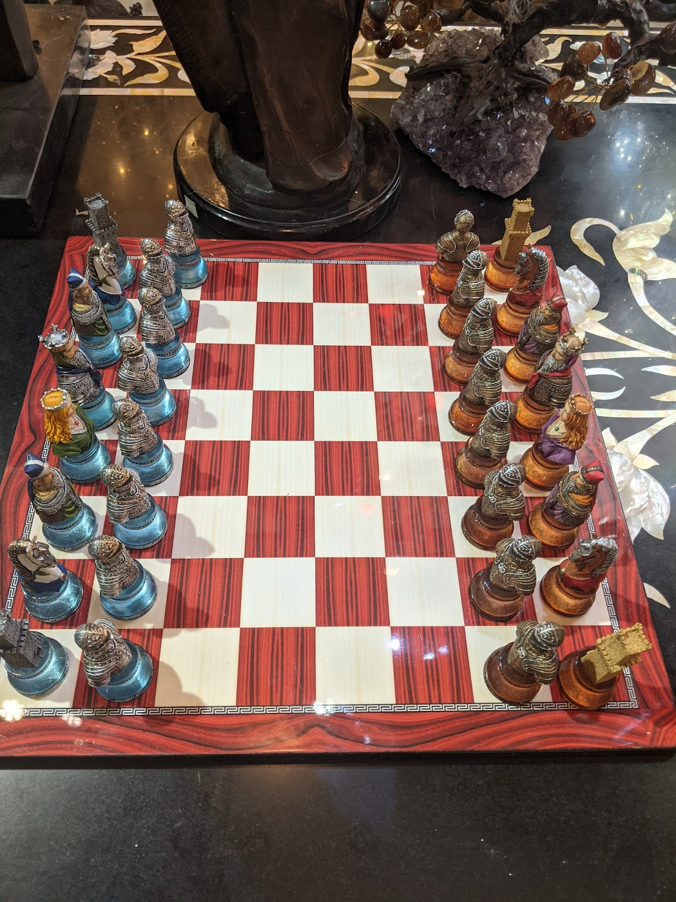

There are a lot of things I enjoy doing, but here are two I'd like to highlight: Art and Chess.
I don't spend as much time as I'd like making art, but it's something I enjoy a lot. Below are two pieces I made.
 
Chess is something I got into in highschool. After Queens Gambit and COVID hit it blew up, and I have had a lot more oppurtunties to play with people because of it. Last year I played in my first tournament. I havent had time to compete since, but just like Art, I enjoy anytime spent with this hobby.
